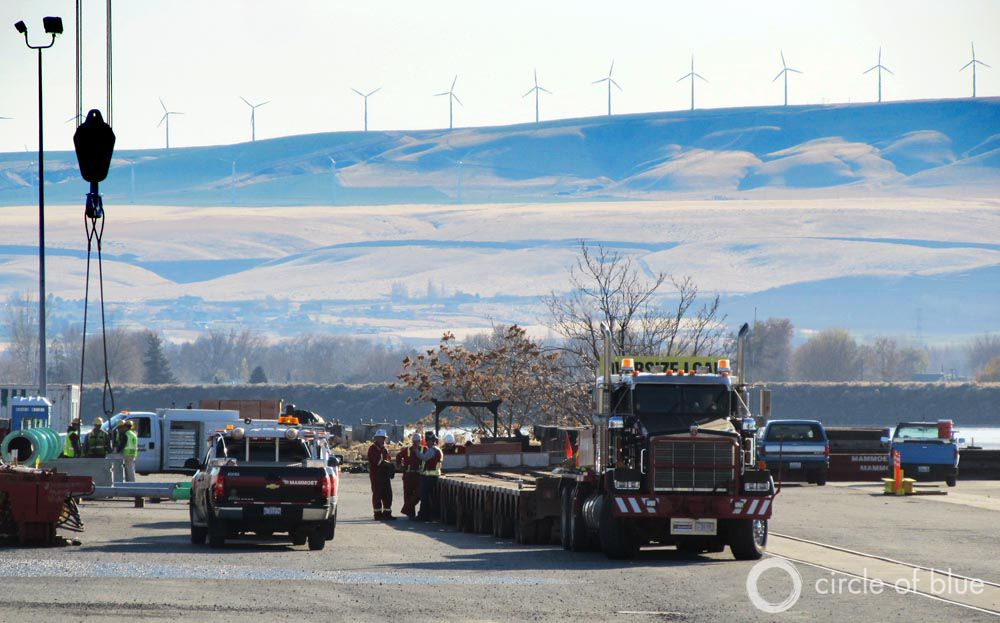

In Oakland, Still A City With Thorns, A New Garden Emerges (Part I)
Quality of life and economy thrives with greater care for water, energy, air, and waste.
Over the last quarter century, and with quickening resolve during the last decade, Oakland underwent a city makeover.Ardently supported by residents and business executives, the city steadily injected much more ecologically sensitive practices into its operating systems – from waste management to transit, energy efficient building codes to carbon-limiting port and electrical utility operations.Downtown open spaces now are alive with business and civic energy.
Click image to enlarge.
Circle of Blue
On June 19, three days after the Golden State Warriors won the 2015 N.B.A. World Championship, a throng of Bay Area residents gathered ten deep along Oakland’s center city avenues for a ticker-tape parade, then massed again on the green lawns beside Lake Merritt, the city’s magnificent central park.
Everything about that Thursday—bright and warm, rich in colors and sounds—set the celebration apart from any other day in Oakland’s 163-year history.The championship was the first for the Warriors in 40 years.The clean streets and shimmering Lake Merritt, newly restored, provided decorous stages for a two-mile long parade and a rally attended by 1 million people, said the police, the largest crowd ever seen in Oakland.
Forty years is a long time in the history of a basketball team or a city.In 1975, when the Warriors last won the N.B.A. championship, they played the final-round series in Daly City, south of San Francisco, because their home court at the Oakland Arena was booked.The team handed out 16,000 free tickets for the indoor championship rally; 8,000 people showed up.The meager crowd was telling evidence of a distracted Pacific Coast city tumbling deeper into an end-of-the-20th-century era of deindustrialization, pollution, neglect, poverty, racial division, and mounting street violence.
Oakland is a different place today.The diverse and excited crowd that attended the Warrior’s 2015 championship day collectively formed a fresh message about California’s eighth largest city.Though violence and crime continue to scar neighborhoods, much of the rest of Oakland has stepped across an ecological, economic, and demographic threshold.The first decades of the 21st century amount to a new period of much cleaner and more efficient use and care for Oakland’s natural bounty, public infrastructure, and developing neighborhoods.
As part of our Global Choke Point project the China Environment Forum, a program of the Woodrow Wilson International Center for Scholars, and Circle of Blue are closely studying trends in energy and water supply and use in two Pacific port cities – Oakland and Shenzhen, China.The Choke Point: Cities project builds on five years of multimedia reporting and convening that examined the water-energy-food confrontations in China, Australia, the United States, India, Mongolia, and the Arabian Gulf.
In 2009, Oakland port directors announced the start of a $US 650 million program to cut soot and dust from diesel emissions by 85 percent by 2020.The first step in the plan was to install strict emissions limits on trucks calling on the port.Under a $US 32 million state grant, truck owners were provided financial assistance to add filters and other pollution control equipment to their engines.Oakland also spent $US 60 million to install electric power hookups at port berths.No longer are ships that regularly visit the port allowed to operate with their diesel engines running while loading and unloading.The result is that the air around the port is much cleaner.
Click image to enlarge.
Like other port cities, Oakland and Shenzhen are growing and face tightening water and energy choke points that have prompted differing consequences.The Choke Point: Cities project is producing in-depth reports that explore the causes and responses.The project also includes a U.S.-China research exchange that next spring will convene research and policy stakeholders from both countries to write briefs, discuss solutions, and work to identify areas of U.S.-China collaboration.
Among United States port cities, few have met the challenge of responding to warmer, drier, more resource-scarce conditions as has Oakland.Some of the metrics of sustainability present a clear picture of a city pursuing a new vector of growth and development.
In effect, Oakland steadily added over the last generation new kinds of nutrients – policy, practices, design, investment, equipment—to the garden of its city operations.Though high rates of poverty, joblessness, and crime scar some neighborhoods, Oakland as a whole is recognized as a global leader among sustainable cities.
The city’s air is much cleaner, according to state air quality measurements.So are its streams and the San Francisco Bay shoreline.Lake Merritt is the restored jewel of a network of new and renovated parks.Oakland rebuilt many of its most famous avenues, established a state-of-the-art waste recycling program, and built thousands of energy efficient homes and buildings.The city is constructing a $US 178 million, nearly 16- kilometer (10-mile) long bus rapid-transit line to carry 35,000 passengers daily from downtown to San Leandro and add to a transit system anchored by six BART rapid-rail stations that serve Oakland neighborhoods.
Reworking a city’s operating system is like caring for a timber lot.Like slow growing hardwoods, the changes in city environmental and living conditions take shape over years, the product of decisions and spending made in administrative and council meetings, and executed by managers largely out of public view.Several senior staff members in city government form a kind of sustainability collaborative: Daniel Hamilton, the sustainability program manager; Scott Wentworth, the city energy engineer; Lesley Estes, the watershed protection program manager; and Victoria Salinas, the chief resilience officer.
'They’ve got a lot of really good programs, and top-notch people in place to set trends in how cities function to lower climate emissions, save energy, be cleaner,' said J.R. Killigrew, the senior climate program officer for ICLEI, a global network of cities and towns developing sustainable practices that is based in Oakland.'One of the things they’ve done really well is invite public participation.They’ve encouraged the people who live here to get involved.If you attend hearings, public meetings, you see that it’s working.People are involved.'
The accumulated results of the distinctive steps Oakland took to prepare itself for the cleaner, greener, more resource efficient new century also are a huge factor in helping to generate a new arts and music cultural vibe, a strong network of influential social justice neighborhood groups, a flurry of technologically savvy businesses and professional-level jobs, and a growing flow of skilled and highly educated young entrepreneurs.
They’ve got a lot of really good programs, and top-notch people in place to set trends in how cities function to lower climate emissions, save energy, be cleaner.'
'It’s an incredibly vibrant city.There are so many things happening,' said Natalie Meier, a writer who just graduated from Mills College in Oakland and reports on city business and cultural events for OaklandLocal.com, a news and events website.'It’s a hub for creativity.People feel comfortable calling this home.Activism and social justice work happens here.The conversations people are having are important – race, justice, wages.They are about everything.'
Oakland, in short, has built itself into a sun-bright Pacific city ready to share proven lessons about how to thrive in a new era of much different and more challenging ecological and economic conditions.Stephen Curry, the Warriors’ best player, touched on the transition in the city’s outlook during his remarks to the noisy crowd.
'Six years ago, when I was drafted, I lived right here on Lake Merritt,' he said.‘’I can’t say enough about how important it is, how beautiful it is to see all that blue and yellow in the stands supporting the city of Oakland like it should.'
To many longtime residents, describing Oakland as a change-agent in sustainability typically invites raised eyebrows and questions.
'You’re kidding, right?'asks Sam Cawley, who earns his keep as a cook in a downtown restaurant and has lived in Oakland for all of his 49 years.'You been to East Oakland?'
Yes, and it’s not real pretty.One in five of Oakland’s 414,000 residents live in poverty that is concentrated in a small group of neighborhoods, among them East Oakland.The city’s school system, made up of 124 schools and 46,000 students, struggles to deliver classes, test scores, and programs that inspire confidence in students and their parents.
One in five of Oakland’s 414,000 residents live in poverty that is concentrated in a small group of neighborhoods.The city’s school system, made up of 124 schools and 46,000 students, struggles to deliver classes, test scores, and programs that inspire confidence in students and their parents.Crime is a stubborn problem across too much of Oakland and mars the city’s reputation.
Click image to enlarge.
Crime is a stubborn problem across too much of Oakland.Property crime rates are twice the state and national averages, according to FBI figures.Violent crime rates are five times the state rate and more than six times higher than the national rate.The city’s narcotics street economy makes random killings and drive-by shootings a weekly staple of local television news and inspires revealing amateur videos on YouTube.A street shootout close to the Warriors rally left three people injured.As of the end of August, 53 murders occurred in Oakland this year.
The mayhem mars Oakland’s national and global reputation.But unlike the 1980s and 1990s, when crime combined with grime to drive residents out of the city – the population fell to a post-World War II low of 339,000 in 1980 – people are returning to neighborhoods where home prices and apartment rentals are steadily climbing.Oakland’s population – now 414,000 – grew by 6,000 residents in the last year, according to the U.S. Census.Since the depths of the recession in 2010, when the unemployment rate in Oakland reached over 17 percent, the city has added an average of 14,000 new jobs a year.Oakland’s jobless rate is 5.3 percent, according to the U.S. Bureau of Labor Statistics.
In effect, Oakland is two cities: one weighted by danger and disarray, the other getting cleaner, greener, and more prosperous.
The new Oakland thrives on a generation of public investments and improvements in the operation of the city’s basic core infrastructure – water supply and treatment, solid waste disposal, port operations, electrical generation, streams and shoreline, transportation, parks, housing and office development.
It is not the glittering stuff that attracts much popular attention.
'I don’t know anything about that,' demurs Natalie Meier.'I just know this is a beautiful and comfortable place.'
The reason for that is more than Oakland’s place on the shoreline of magnificent San Francisco Bay.Over the last quarter century, and with quickening resolve during the last decade, Oakland’s political leaders and city managers acted almost like urban nutrition specialists or city makeover artists.Ardently supported by residents and business executives, the city steadily injected much more ecologically sensitive operating practices into the city’s deteriorating muscular and vascular operating systems – from waste management to transit, energy efficient building codes to carbon-limiting port and electrical utility operations.
As part of our Global Choke Point project the China Environment Forum, a program of the Woodrow Wilson International Center for Scholars, and Circle of Blue are closely studying trends in energy and water supply and use in two Pacific port cities – Oakland and Shenzhen, China.This story is the first in a two-part series on Oakland.Read the second story: In Oakland, Still A City With Thorns, A New Garden Emerges (Part II) .The Choke Point: Cities project builds on five years of multimedia reporting and convening that examined the water-energy-food confrontations in China, Australia, the United States, India, Mongolia, and the Arabian Gulf.
Posted On: 2015-10-14T00:00:00
Posted By: Keith Schneider

Content Date: 2015-10-14
Download Date: 2021-05-12
Document ID: L0C04B0VW